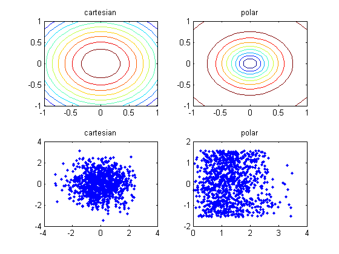

change of variables demo
mu = [0 0];
Sigma = eye(2);
xrange = [-1 1 -1 1]; npoints = 20;
[X1,X2] = meshgrid(linspace(xrange(1), xrange(2), npoints)',...
linspace(xrange(3), xrange(4), npoints)');
[nr] = size(X1,1); nc = size(X2,1);
X = [X1(:) X2(:)];
pxy = gaussProb(X, mu, Sigma);
r = sqrt(X(:,1).^2 + X(:,2).^2);
t = atan(X(:,2) ./ X(:,1));
prt = pxy .* r;
model.mu = mu; model.Sigma = Sigma;
samples = gaussSample(model, 1000);
rs = sqrt(samples(:,1).^2 + samples(:,2).^2);
ts = atan(samples(:,2) ./ samples(:,1));
figure;
subplot(2,2,1);contour(X1, X2, reshape(pxy, nr, nc)); title('cartesian')
subplot(2,2,2);contour(X1, X2, reshape(prt, nr, nc)); title('polar')
subplot(2,2,3);plot(samples(:,1), samples(:,2), '.'); title('cartesian');
subplot(2,2,4);plot(rs,ts,'.'); title('polar')
